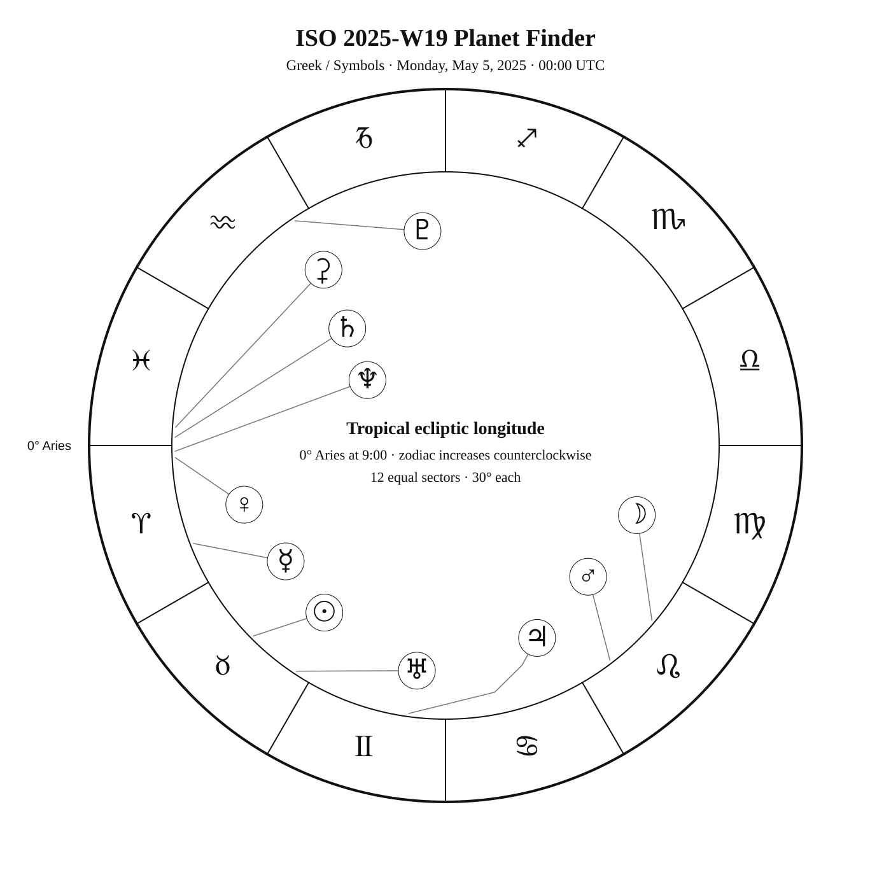
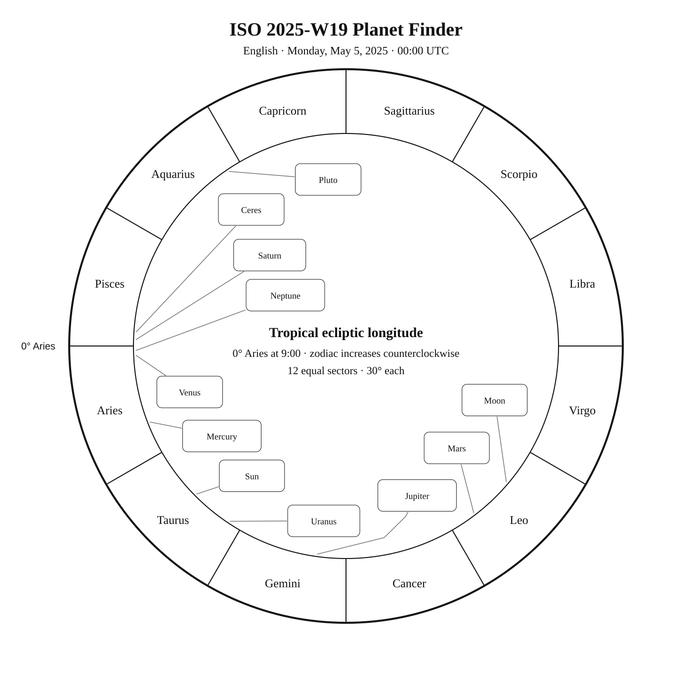
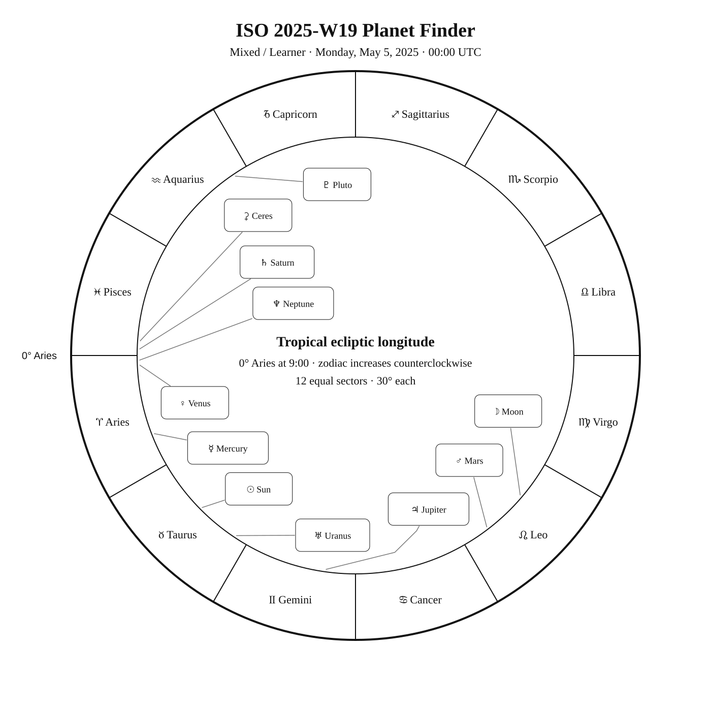

ISO 2025-W19
Week begins: Monday, May 5, 2025
Calendar
| Date | Zodiac day | Events |
|---|---|---|
| Mon, May 5, 2025 | ♉ 17 | Beltane · Spring–Summer midpoint — 05:57:11 UTC Denebola (β Leo) —  Var 2 2.1 2.1–2.2 — Tropical Spring Var 2 2.1 2.1–2.2 — Tropical SpringZavijava (β Vir) —  4 3.6 — Tropical Spring 4 3.6 — Tropical Spring |
| Tue, May 6, 2025 | ♉ 18 | β Hya — 4 4.3 — Southern SpringFinest NGC 44 / NGC 3941 · MCG 6-26-51 —  11 11.3 — Northern Spring 11 11.3 — Northern SpringPhecda (γ UMa) — 2 2.4 — Northern Spring |
| Wed, May 7, 2025 | ♉ 19 | M109 — 10 9.8 — Northern Spring |
| Thu, May 8, 2025 | ♉ 20 | Finest NGC 45 / NGC 4026 · MCG 9-20-52 — 12 11.7 — Northern SpringFinest NGC 74 / NGC 4038 · The Antennae with 4039 / C60 / NGC 4038 · Antennae Galaxies — 11 10.9 — Tropical SpringC61 / NGC 4039 · Antennae Galaxies — 13 13.0 — Tropical Spring |
| Fri, May 9, 2025 | ♉ 21 | Finest NGC 46 / NGC 4088 · Arp 18 — 11 11.3 — Northern Spring |
| Sat, May 10, 2025 | ♉ 22 | Finest NGC 59 / NGC 4111 · MCG 7-25-26 — 12 11.7 — Northern SpringAlchiba (α Crv) — 4 4.0 — Southern Spring |
| Sun, May 11, 2025 | ♉ 23 | Finest NGC 47 / NGC 4157 · MCG 9-20-106 — 12 12.1 — Northern SpringM98 — 10 10.1 — Tropical Spring |
Weekly Solar-System Ephemeris
Snapshot: Week begins May 5, 2025, 00:00 UTC.
(-90° to +90°; defaults +45°, 21:00 LAT)
| Body | ☉︎ | ☽︎ | ☿︎ | ♀︎ | ♂︎ | ♃︎ | ♄︎ |
|---|---|---|---|---|---|---|---|
| Ecliptic | ♉︎ 14°46′ β +0°00′ | ♌︎ 19°44′ β +3°05′ | ♈︎ 21°14′ β −2°47′ | ♈︎ 2°34′ β +0°28′ | ♌︎ 7°27′ β +1°55′ | ♊︎ 22°11′ β −0°14′ | ♓︎ 28°15′ β −2°01′ |
| Observing |  | -10.3 | -0.0 | -4.7 | 1.0 | -2.0 | 1.2 |
| Rise | 04:47 | 11:24 | 04:08 | 03:11 | 10:21 | 06:53 | 03:15 |
| Set | 19:13 | 02:03 | 16:59 | 15:28 | 01:23 | 22:21 | 15:00 |
Extended targets:
| Body | ⚳︎ | ♅︎ | ♆︎ | ♇︎ |
|---|---|---|---|---|
| Ecliptic | ♓︎ 26°07′ β −8°47′ | ♉︎ 26°33′ β −0°13′ | ♈︎ 1°13′ β −1°17′ | ♒︎ 3°49′ β −3°33′ |
| Observing | 9.3 | ☉︎ | 7.8 | 14.5 |
| Rise | 03:47 | 05:23 | 03:18 | 01:15 |
| Set | 14:35 | 20:13 | 15:17 | 10:03 |
β = ecliptic latitude (+ north, − south).
Rise and set are Local Apparent Time for the selected latitude.
Naked-eye observing uses the Sun’s altitude at the selected Monday observer time: Daylight (Sun ≥ −0.833°), Civil twilight (−0.833° to −6°), Nautical twilight (−6° to −12°), Astronomical twilight (−12° to −18°), and Night (below −18°).
Solar Glare identifies a body too close to the Sun when the sky-state rule does not already supersede its naked-eye classification.
The Sun’s observing status uses this same five-state sky classification.
Planet Finder



Sky Notes
Kilroy: Sky Notes · generated 2026-10-23 08:56:45 UTC
ISO 2025-W19 runs from May 5 through May 11. Jupiter is about 0.4° in ecliptic longitude from Elnath in Taurus. Venus and Neptune are separated by about 1.3° in geocentric ecliptic longitude at the Monday 00:00 UTC snapshot.


Naked eye: No principal lunar phase is listed this week. Check the Moon's position each night and favor darker hours for low-contrast targets. Use Denebola, Phecda as the week’s fixed-sky framework.

Planets: Moon: Naked eye; magnitude -10.3; direct motion; 54.5% illuminated. Monday 00:00 UTC snapshot. Mercury: Naked eye; magnitude -0.0; direct motion; 65.4% illuminated. Below the horizon at 21:00 local apparent solar time, 45°N. Monday 00:00 UTC snapshot. Venus: Naked eye; magnitude -4.7; direct motion; 32.1% illuminated. Below the horizon at 21:00 local apparent solar time, 45°N. Monday 00:00 UTC snapshot. Mars: Naked eye; magnitude 1.0; direct motion; 90.0% illuminated. Monday 00:00 UTC snapshot. Ceres: Telescope; magnitude 9.3; direct motion; 98.3% illuminated. Below the horizon at 21:00 local apparent solar time, 45°N. Monday 00:00 UTC snapshot. Jupiter: Naked eye; magnitude -2.0; direct motion; 99.6% illuminated. Monday 00:00 UTC snapshot. Saturn: Naked eye; magnitude 1.2; direct motion; 99.9% illuminated. Below the horizon at 21:00 local apparent solar time, 45°N. Monday 00:00 UTC snapshot. Uranus: In solar glare; magnitude 5.8; direct motion; 100.0% illuminated. Monday 00:00 UTC snapshot. Neptune: Telescope; magnitude 7.8; direct motion; 100.0% illuminated. Below the horizon at 21:00 local apparent solar time, 45°N. Monday 00:00 UTC snapshot. Pluto: Substantial telescope; magnitude 14.5; retrograde motion; 100.0% illuminated. Below the horizon at 21:00 local apparent solar time, 45°N. Monday 00:00 UTC snapshot.


Binoculars: Trace Virgo’s charted figure in the finder, then identify Zavijava at its charted position. Trace Hydra’s charted figure in the finder, then identify β Hya at its charted position. Trace Corvus’s charted figure in the finder, then identify Alchiba at its charted position.
Small telescope: MCG 6-26-51: consult its dedicated finder and observing story for equipment guidance; M109: consult its dedicated finder and observing story for equipment guidance; MCG 9-20-52: consult its dedicated finder and observing story for equipment guidance; Antennae Galaxies: consult its dedicated finder and observing story for equipment guidance; Antennae Galaxies: consult its dedicated finder and observing story for equipment guidance; Arp 18: consult its dedicated finder and observing story for equipment guidance; MCG 7-25-26: consult its dedicated finder and observing story for equipment guidance; MCG 9-20-106: consult its dedicated finder and observing story for equipment guidance; M98: consult its dedicated finder and observing story for equipment guidance
Substantial telescope: No fixed-sky Calendar object is classified as requiring a substantial telescope this week.
Other objects listed this week: Antennae Galaxies
Mercury
Mercury: naked eye at the Monday 00:00 UTC snapshot. At 45°N and 21:00 local apparent solar time, it is 35.3° below the horizon. Rises 04:08; sets 16:59 (45°N, local apparent solar time). Visual magnitude -0.0. The disk is 65.4% illuminated (gibbous). It is 23.7° from the Sun, on its west side. Motion is direct at 1.499° per day in ecliptic longitude at the snapshot. Position reference: Alrescha, 10.5° away. Mercury: 10.5° from Alrescha in the Pathfinder.
Venus
Venus: naked eye at the Monday 00:00 UTC snapshot. At 45°N and 21:00 local apparent solar time, it is 43.5° below the horizon. Rises 03:11; sets 15:28 (45°N, local apparent solar time). Visual magnitude -4.7. The disk is 32.1% illuminated (crescent). It is 42.2° from the Sun, on its west side. Motion is direct at 0.642° per day in ecliptic longitude at the snapshot. Position reference: Fumalsamakah, 16.1° away. Saturn is 5.0° away at the snapshot. Neptune is 2.2° away at the snapshot. Venus: 16.1° from Fumalsamakah in the Pathfinder.
Moon
Moon: naked eye at the Monday 00:00 UTC snapshot. At 45°N and 21:00 local apparent solar time, it is 50.8° above the horizon. Rises 11:24; sets 02:03 (45°N, local apparent solar time). Visual magnitude -10.3. The disk is 54.5% illuminated (waxing gibbous). It is 95.0° from the Sun, on its east side. Motion is direct at 12.670° per day in ecliptic longitude at the snapshot. Position reference: Acubens, 10.0° away. Moon: 10.0° from Acubens in the Pathfinder.
Mars
Mars: naked eye at the Monday 00:00 UTC snapshot. At 45°N and 21:00 local apparent solar time, it is 44.3° above the horizon. Rises 10:21; sets 01:23 (45°N, local apparent solar time). Visual magnitude 1.0. The disk is 90.0% illuminated (gibbous). It is 82.7° from the Sun, on its east side. Motion is direct at 0.471° per day in ecliptic longitude at the snapshot. Position reference: Acubens, 9.6° away. Mars: 9.6° from Acubens in the Pathfinder.
Jupiter
Jupiter: naked eye at the Monday 00:00 UTC snapshot. At 45°N and 21:00 local apparent solar time, it is 12.1° above the horizon. Rises 06:53; sets 22:21 (45°N, local apparent solar time). Visual magnitude -2.0. The disk is 99.6% illuminated (nearly full). It is 37.4° from the Sun, on its east side. Motion is direct at 0.205° per day in ecliptic longitude at the snapshot. Position reference: Elnath, 5.7° away. Jupiter: 5.7° from Elnath in the Pathfinder.
Saturn
Saturn: naked eye at the Monday 00:00 UTC snapshot. At 45°N and 21:00 local apparent solar time, it is 47.7° below the horizon. Rises 03:15; sets 15:00 (45°N, local apparent solar time). Visual magnitude 1.2. The disk is 99.9% illuminated (nearly full). It is 46.5° from the Sun, on its west side. Motion is direct at 0.098° per day in ecliptic longitude at the snapshot. Position reference: Fumalsamakah, 14.4° away. Venus is 5.0° away at the snapshot. Neptune is 3.1° away at the snapshot. Saturn: 14.4° from Fumalsamakah in the Pathfinder.
Uranus
Uranus: in solar glare at the Monday 00:00 UTC snapshot. Rises 05:23; sets 20:13 (45°N, local apparent solar time). Visual magnitude 5.8. The disk is 100.0% illuminated (nearly full). It is 11.8° from the Sun, on its east side. Motion is direct at 0.057° per day in ecliptic longitude at the snapshot. Position reference: Aldebaran, 14.6° away. Uranus: 14.6° from Aldebaran in the Pathfinder.
Neptune
Neptune: telescope at the Monday 00:00 UTC snapshot. At 45°N and 21:00 local apparent solar time, it is 45.7° below the horizon. Rises 03:18; sets 15:17 (45°N, local apparent solar time). Visual magnitude 7.8. The disk is 100.0% illuminated (nearly full). It is 43.6° from the Sun, on its west side. Motion is direct at 0.029° per day in ecliptic longitude at the snapshot. Position reference: Fumalsamakah, 16.0° away. Venus is 2.2° away at the snapshot. Saturn is 3.1° away at the snapshot. Neptune: 16.0° from Fumalsamakah in the Pathfinder.
Ceres
Ceres: telescope at the Monday 00:00 UTC snapshot. At 45°N and 21:00 local apparent solar time, it is 54.7° below the horizon. Rises 03:47; sets 14:35 (45°N, local apparent solar time). Visual magnitude 9.3. The disk is 98.3% illuminated (gibbous). It is 49.2° from the Sun, on its west side. Motion is direct at 0.339° per day in ecliptic longitude at the snapshot. Position reference: Diphda, 13.7° away. Ceres: 13.7° from Diphda in the Pathfinder.
Pluto
Pluto: substantial telescope at the Monday 00:00 UTC snapshot. At 45°N and 21:00 local apparent solar time, it is 43.7° below the horizon. Rises 01:15; sets 10:03 (45°N, local apparent solar time). Visual magnitude 14.5. The disk is 100.0% illuminated (nearly full). It is 100.9° from the Sun, on its west side. Motion is retrograde at 0.000° per day in ecliptic longitude at the snapshot. Position reference: Dabih, 8.2° away. Pluto: 8.2° from Dabih in the Pathfinder.
Highlights
Mercury
Naked eye; magnitude -0.0; direct motion; 65.4% illuminated. Below the horizon at 21:00 local apparent solar time, 45°N. Monday 00:00 UTC snapshot. Mercury: 10.5° from Alrescha in the Pathfinder.
Venus
Naked eye; magnitude -4.7; direct motion; 32.1% illuminated. Below the horizon at 21:00 local apparent solar time, 45°N. Monday 00:00 UTC snapshot. Venus: 16.1° from Fumalsamakah in the Pathfinder.
Moon
Naked eye; magnitude -10.3; direct motion; 54.5% illuminated. Monday 00:00 UTC snapshot. Moon: 10.0° from Acubens in the Pathfinder.
Mars
Naked eye; magnitude 1.0; direct motion; 90.0% illuminated. Monday 00:00 UTC snapshot. Mars: 9.6° from Acubens in the Pathfinder.
Jupiter
Naked eye; magnitude -2.0; direct motion; 99.6% illuminated. Monday 00:00 UTC snapshot. Jupiter: 5.7° from Elnath in the Pathfinder.
Saturn
Naked eye; magnitude 1.2; direct motion; 99.9% illuminated. Below the horizon at 21:00 local apparent solar time, 45°N. Monday 00:00 UTC snapshot. Saturn: 14.4° from Fumalsamakah in the Pathfinder.
Uranus
In solar glare; magnitude 5.8; direct motion; 100.0% illuminated. Monday 00:00 UTC snapshot. Uranus: 14.6° from Aldebaran in the Pathfinder.
Neptune
Telescope; magnitude 7.8; direct motion; 100.0% illuminated. Below the horizon at 21:00 local apparent solar time, 45°N. Monday 00:00 UTC snapshot. Neptune: 16.0° from Fumalsamakah in the Pathfinder.
Ceres
Telescope; magnitude 9.3; direct motion; 98.3% illuminated. Below the horizon at 21:00 local apparent solar time, 45°N. Monday 00:00 UTC snapshot. Ceres: 13.7° from Diphda in the Pathfinder.
Pluto
Substantial telescope; magnitude 14.5; retrograde motion; 100.0% illuminated. Below the horizon at 21:00 local apparent solar time, 45°N. Monday 00:00 UTC snapshot. Pluto: 8.2° from Dabih in the Pathfinder.